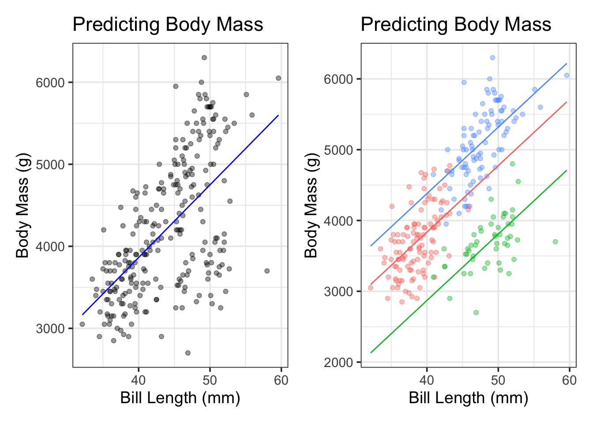

Using Higher-Order Terms: Curvi-Linear (Polynomial) Terms
Where We Stand
We’ve come a long way over the past few weeks. We’ve followed the trajectory below.
Simple Linear Regression Models: \(\mathbb{E}\left[y\right] = \beta_0 + \beta_1 \cdot x_1\)
- General Assumption: We can predict the response, \(y\), using knowledge of another variable, \(x_1\). The relationship between \(y\) and \(x_1\) is a straight line relationship, with random noise (irreducible error).
- Model Form: A simple linear regression model is a straight line.
Multiple Linear Regression Models: \(\mathbb{E}\left[y\right] = \beta_0 + \beta_1 x_1 + \beta_2 x_2 + \cdots + \beta_k x_k\)
General Assumption: We can predict the response, \(y\), using knowledge of other variables, \(x_1,~x_2,~\cdots,~x_k\).
- For any of the \(x_i\) which are numerical, the association between \(y\) and \(x_i\) is a straight line relationship, with slope (\(\beta_i\)) independent of all other predictors \(x_j\).
- For any of the \(x_i\) which are dummy variables corresponding to a categorical predictor, the impact of including \(x_i\) in the model is a vertical shift. That is, a change in intercept specific to that particular level of the categorical variable.
- All other fluctuation in \(y\) is random noise (irreducible error).
Model Form: A multiple linear regression model with no categorical predictors is a flat hyperplane, while a multiple linear regression model with categorical predictors is a set of parallel, flat hyperplanes.
We can see these model forms below. For ease of visualization, we’ll use a simple linear regression model to predict penguin body_mass_g using bill_length_mm on the left. In the plot on the right, we’ll extend that model by introducing dummy variables corresponding to the species variable. Note that a hyperplane in two dimensions (bill_length_mm and body_mass_g) is a straight line.
We can see that our models in both cases are straight lines, and that the models are parallel lines in the case where we included the species variable. We’ll move beyond these restrictions in this notebook and the next one too.
- In this notebook, we’ll discuss methods for adding curvature to our models. This is sometimes called curvi-linear regression.
- In our next notebook, we’ll discuss methods for allowing interaction between terms. Among other things, interaction terms will allow for non-parallel hyperplanes (different rates of change / slopes for different categories).
Objectives
In previous notebooks we learned how to build, assess, and interpret simple and multiple linear regression models, including those with categorical predictors. Those models all made the following assumptions:
- The association between the response and any individual predictor is linear.
- All predictor variables act independently in influencing/predicting the response.
- The association between any numerical predictor and the response (the slope of the model) is the same, regardless of the class/category
What happens if these assumptions aren’t reasonable (or we want to explore whether relaxing these assumptions improves fit)? In this notebook, we’ll see how to update our models to allow for curved relationships and predictors which do not act independently to influence our response variable. After reviewing this notebook, you should be able to:
Use exploratory data analysis to identify visual evidence for curved relationships and interaction between predictors.
Use
step_*()functions to augment arecipe(), updating how predictor variables are utilized in a regression model.- These
step_*()functions are feature engineering steps, which transform our underlying data set.
- These
Use
step_poly()to allow for polynomial terms in a model – that is, terms whose corresponding predictor variable is raised to a positive integer power.Fit, assess, reduce, interpret, and utilize models including polynomial terms.
A New Data Set: Boston Housing
There’s not much visual evidence to suggest curved relationships between the physiological features and penguin body mass in the palmerpenguins data set. Because of this, we’ll temporarily shift to a new data set on median property values in Boston from the 1970’s.
boston <- read_csv("https://raw.githubusercontent.com/selva86/datasets/master/BostonHousing.csv")Rows: 506 Columns: 14
── Column specification ────────────────────────────────────────────────────────
Delimiter: ","
dbl (14): crim, zn, indus, chas, nox, rm, age, dis, rad, tax, ptratio, b, ls...
ℹ Use `spec()` to retrieve the full column specification for this data.
ℹ Specify the column types or set `show_col_types = FALSE` to quiet this message.boston %>%
head() %>%
kable() %>%
kable_styling()| crim | zn | indus | chas | nox | rm | age | dis | rad | tax | ptratio | b | lstat | medv |
|---|---|---|---|---|---|---|---|---|---|---|---|---|---|
| 0.00632 | 18 | 2.31 | 0 | 0.538 | 6.575 | 65.2 | 4.0900 | 1 | 296 | 15.3 | 396.90 | 4.98 | 24.0 |
| 0.02731 | 0 | 7.07 | 0 | 0.469 | 6.421 | 78.9 | 4.9671 | 2 | 242 | 17.8 | 396.90 | 9.14 | 21.6 |
| 0.02729 | 0 | 7.07 | 0 | 0.469 | 7.185 | 61.1 | 4.9671 | 2 | 242 | 17.8 | 392.83 | 4.03 | 34.7 |
| 0.03237 | 0 | 2.18 | 0 | 0.458 | 6.998 | 45.8 | 6.0622 | 3 | 222 | 18.7 | 394.63 | 2.94 | 33.4 |
| 0.06905 | 0 | 2.18 | 0 | 0.458 | 7.147 | 54.2 | 6.0622 | 3 | 222 | 18.7 | 396.90 | 5.33 | 36.2 |
| 0.02985 | 0 | 2.18 | 0 | 0.458 | 6.430 | 58.7 | 6.0622 | 3 | 222 | 18.7 | 394.12 | 5.21 | 28.7 |
This Boston housing dataset is quite famous (and problematic), and includes features on each neighborhood and the corresponding median home value in that neighborhood. You can see a data dictionary here. The data set has many interesting features and even allows us some ability to explore structural racism in property valuation in 1970s Boston.
We’ll assume that medv, the median home value in thousands of dollars, is our response variable and we’ll focus on the age, lstat, and chas predictors.
Motivating Interaction and Higher-Order Terms
Let’s take a look at the relationships between some of the available predictors in the boston data set and the median home values (medv). As usual, we’ll split off the training and test sets so that the test data remains hidden from ourselves and the model.
boston_split <- initial_split(boston)
boston_train <- training(boston_split)
boston_test <- testing(boston_split)
boston_test %>%
head() %>%
kable() %>%
kable_styling()| crim | zn | indus | chas | nox | rm | age | dis | rad | tax | ptratio | b | lstat | medv |
|---|---|---|---|---|---|---|---|---|---|---|---|---|---|
| 0.00632 | 18.0 | 2.31 | 0 | 0.538 | 6.575 | 65.2 | 4.0900 | 1 | 296 | 15.3 | 396.90 | 4.98 | 24.0 |
| 0.02729 | 0.0 | 7.07 | 0 | 0.469 | 7.185 | 61.1 | 4.9671 | 2 | 242 | 17.8 | 392.83 | 4.03 | 34.7 |
| 0.06905 | 0.0 | 2.18 | 0 | 0.458 | 7.147 | 54.2 | 6.0622 | 3 | 222 | 18.7 | 396.90 | 5.33 | 36.2 |
| 0.21124 | 12.5 | 7.87 | 0 | 0.524 | 5.631 | 100.0 | 6.0821 | 5 | 311 | 15.2 | 386.63 | 29.93 | 16.5 |
| 0.09378 | 12.5 | 7.87 | 0 | 0.524 | 5.889 | 39.0 | 5.4509 | 5 | 311 | 15.2 | 390.50 | 15.71 | 21.7 |
| 0.85204 | 0.0 | 8.14 | 0 | 0.538 | 5.965 | 89.2 | 4.0123 | 4 | 307 | 21.0 | 392.53 | 13.83 | 19.6 |
Now let’s do some visualization.
p1 <- boston_train %>%
ggplot() +
geom_hex(aes(x = lstat, y = medv)) +
labs(x = "Proportion Residents with Low Socioeconomic Status",
y = "Median Home Values (000s)")
p2 <- boston_train %>%
ggplot() +
geom_point(aes(x = age, y = medv),
alpha = 0.5) +
labs(x = "Proportion of Homes Built Before 1940",
y = "Median Home Values (000s)")
p3 <- boston_train %>%
mutate(chas = ifelse(chas == 1, "on", "off")) %>%
ggplot() +
geom_boxplot(aes(x = chas, y = medv)) +
labs(x = "On the Charles River",
y = "Median Home Values (000s)") +
coord_flip()
(p1 + p2) / p3From the plots above, we see that the association between the proportion of residents having low socioeconomic status (lstat) and the median home values (medv) have a nonlinear association. Additionally, it may be reasonable to suspect that the “slope” of the model with respect to age (the proportion of homes built prior to 1940) is different for neighborhoods on the Charles River versus those which are away from the river. We’ll explore all of these things, and more, in the coming sections of this notebook.
New Terminology
Before we start building models, its worth developing some helpful terminology. Consider the model below:
\(\begin{align}\mathbb{E}\left[\text{medv}\right] = &\beta_0 + \beta_1\cdot\left(\text{age}\right) + \beta_2\cdot\left(\text{lstat}\right) + \beta_3\cdot\left(\text{chas}\right) + \beta_4\cdot\left(\text{age}^2\right) +\\ &\beta_5\cdot\left(\text{chas}\cdot\text{age}\right) + \beta_6\cdot\left(\text{chas}\cdot\text{age}^2\right) + \beta_7\cdot\left(\text{chas}\cdot\text{lstat}\right) + \beta_8\cdot\left(\text{age}\cdot\text{lstat}\right) + \beta_9\cdot\left(\text{age}^2\cdot \text{lstat}\right)\end{align}\)
The order of a model is the highest degree of any term in the model. Only numeric predictors contribute to the degree of a term.
- The order of the proposed model above is third order, because of the \(\text{age}^2\cdot\text{lstat}\) term.
Models including interaction terms include main effects and mixed effects terms. The main effects terms contain a single predictor, while the mixed effects terms contain multiple predictors.
\(\begin{align}\mathbb{E}\left[\text{medv}\right] = &\overbrace{\beta_0 + \beta_1\cdot\left(\text{age}\right) + \beta_2\cdot\left(\text{lstat}\right) + \beta_3\cdot\left(\text{chas}\right) + \beta_4\cdot\left(\text{age}^2\right)}^{\text{Main Effects}} +\\ &\underbrace{\beta_5\cdot\left(\text{chas}\cdot\text{age}\right) + \beta_6\cdot\left(\text{chas}\cdot\text{age}^2\right) + \beta_7\cdot\left(\text{chas}\cdot\text{lstat}\right) + \beta_8\cdot\left(\text{age}\cdot\text{lstat}\right) + \beta_9\cdot\left(\text{age}^2\cdot \text{lstat}\right)}_{\text{Mixed Effects}}\end{align}\)
These mixed effects are interaction terms in our model, so we’ll wait until the next notebook to work with them.
Starting with a Main-Effects Model
Let’s start out with a basic model which uses age, lstat, and chas as straight-line predictors of median home values.
main_reg_spec <- linear_reg() %>%
set_engine("lm")
main_reg_rec <- recipe(medv ~ age + lstat + chas, data = boston_train)
main_reg_wf <- workflow() %>%
add_model(main_reg_spec) %>%
add_recipe(main_reg_rec)
main_reg_fit <- main_reg_wf %>%
fit(boston_train)
main_reg_fit %>%
extract_fit_engine() %>%
tidy() %>%
kable() %>%
kable_styling()| term | estimate | std.error | statistic | p.value |
|---|---|---|---|---|
| (Intercept) | 32.7516586 | 0.8274053 | 39.583573 | 0.0000000 |
| age | 0.0334359 | 0.0141179 | 2.368330 | 0.0183749 |
| lstat | -1.0266175 | 0.0552625 | -18.577111 | 0.0000000 |
| chas | 4.7064996 | 1.2068696 | 3.899758 | 0.0001141 |
Let’s compute our performance metrics for our main effects model so that we have a benchmark to try improving from.
my_metrics <- metric_set(rsq, rmse)
(main_reg_fit %>%
augment(boston_train) %>%
my_metrics(medv, .pred) %>%
mutate(type = "train")
) %>%
bind_rows(
main_reg_fit %>%
augment(boston_test) %>%
my_metrics(medv, .pred) %>%
mutate(type = "test")
) %>%
pivot_wider(id_cols = .metric,
names_from = type,
values_from = .estimate) %>%
kable() %>%
kable_styling()| .metric | train | test |
|---|---|---|
| rsq | 0.5822417 | 0.5235821 |
| rmse | 5.9161187 | 6.4395620 |
Okay, now that we’ve got those benchmark metrics, let’s see if we can improve on them by using higher-order terms.
Building a Model Including Curvature (step_poly())
In order to build a model including curvature, we’ll need to include some polynomial terms. These are simply terms which include a predictor raised to an integer power greater than \(1\). We can do this by adding a feature engineering step to our recipe(), just like we did with step_dummy(). In order to add these higher-order terms that introduce curvature, we’ll use step_poly(). Let’s see it in action! We’ll include second-order terms associated with age and lstat, but not for the chas variable. This is because chas is a dummy variable, which can only take the values \(0\) or \(1\) – what happens when you square these values? Including polynomial terms with dummy variables doesn’t actually do anything!
Before we build our model, there are just a few comments about step_poly() that we should highlight.
If you’d like to build polynomial terms associated with multiple variables, you can do this all at once by including each of the variables as the first few arguments to
step_poly(), separating the variables by commas.Set the
degreeof the polynomial terms (the amount of wiggling you’d like to allow) with thedegreeargument.- The default degree for
step_poly()is degree \(2\), allowing a single bend in the association between your predictor(s) and the response. You can override this default by settingdegree = 6, for example. This would allow up to five bends in the association.
- The default degree for
Maintain your ability to interpret the relationship between predictor and response by setting
options = list(raw = TRUE)- There is some linear algebra that can be done to try and reduce the correlation between our polynomial terms and their corresponding lower-order terms. You can think of this as squeezing all of the predictive juice out of the predictor. The
step_poly()function does this by default, but results in a model which is more difficult to interpret. I recommend overriding this any time you intend to interpret your models. You can do this by settingoptions = list(raw = TRUE)withinstep_poly().
- There is some linear algebra that can be done to try and reduce the correlation between our polynomial terms and their corresponding lower-order terms. You can think of this as squeezing all of the predictive juice out of the predictor. The
poly_reg_spec <- linear_reg() %>%
set_engine("lm")
poly_reg_rec <- recipe(medv ~ age + lstat + chas, data = boston_train) %>%
step_poly(age, degree = 2, options = list( raw = TRUE)) %>%
step_poly(lstat, degree = 2, options = list(raw = TRUE))
poly_reg_wf <- workflow() %>%
add_model(poly_reg_spec) %>%
add_recipe(poly_reg_rec)
poly_reg_fit <- poly_reg_wf %>%
fit(boston_train)
poly_reg_fit %>%
glance() %>%
kable() %>%
kable_styling()| r.squared | adj.r.squared | sigma | statistic | p.value | df | logLik | AIC | BIC | deviance | df.residual | nobs |
|---|---|---|---|---|---|---|---|---|---|---|---|
| 0.7016358 | 0.6976363 | 5.039795 | 175.43 | 0 | 5 | -1147.735 | 2309.47 | 2337.033 | 9474.027 | 373 | 379 |
poly_reg_fit %>%
extract_fit_engine() %>%
tidy() %>%
kable() %>%
kable_styling()| term | estimate | std.error | statistic | p.value |
|---|---|---|---|---|
| (Intercept) | 40.3417328 | 1.4595604 | 27.6396465 | 0.0000000 |
| chas | 4.0258219 | 1.0242060 | 3.9306758 | 0.0001010 |
| age_poly_1 | 0.0888854 | 0.0529147 | 1.6797863 | 0.0938362 |
| age_poly_2 | -0.0001052 | 0.0004307 | -0.2443064 | 0.8071279 |
| lstat_poly_1 | -2.6872212 | 0.1444779 | -18.5995316 | 0.0000000 |
| lstat_poly_2 | 0.0484748 | 0.0040289 | 12.0316939 | 0.0000000 |
Note that the term for age_poly_2 is not statistically significant. We’ll drop it from the model and re-run the regression.
poly_reg_spec <- linear_reg() %>%
set_engine("lm")
poly_reg_rec <- recipe(medv ~ age + lstat + chas, data = boston_train) %>%
step_poly(lstat, degree = 2, options = list(raw = TRUE))
poly_reg_wf <- workflow() %>%
add_model(poly_reg_spec) %>%
add_recipe(poly_reg_rec)
poly_reg_fit <- poly_reg_wf %>%
fit(boston_train)
poly_reg_fit %>%
glance() %>%
kable() %>%
kable_styling()| r.squared | adj.r.squared | sigma | statistic | p.value | df | logLik | AIC | BIC | deviance | df.residual | nobs |
|---|---|---|---|---|---|---|---|---|---|---|---|
| 0.7015881 | 0.6983965 | 5.033456 | 219.8253 | 0 | 4 | -1147.766 | 2307.531 | 2331.156 | 9475.543 | 374 | 379 |
poly_reg_fit %>%
extract_fit_engine() %>%
tidy() %>%
kable() %>%
kable_styling()| term | estimate | std.error | statistic | p.value |
|---|---|---|---|---|
| (Intercept) | 40.6120902 | 0.9504752 | 42.728194 | 0.00e+00 |
| age | 0.0763219 | 0.0124520 | 6.129314 | 0.00e+00 |
| chas | 4.0279077 | 1.0228822 | 3.937802 | 9.81e-05 |
| lstat_poly_1 | -2.6830521 | 0.1432861 | -18.725144 | 0.00e+00 |
| lstat_poly_2 | 0.0482845 | 0.0039480 | 12.230164 | 0.00e+00 |
There; now all of our model terms are statistically significant. Let’s see what that model looks like!
poly_reg_fit %>%
augment(boston_train) %>%
ggplot() +
geom_point(aes(x = lstat, y = medv),
alpha = 0.5) +
geom_point(aes(x = lstat, y = .pred),
color = "red",
alpha = 0.4) +
labs(x = "Proportion of Residents with Low Socioeconomic Status",
y = "Median Neighborhood Home Value (000s)",
title = "Median Home Values and Socioeconomic Status",
subtitle = "Actuals in Black, Predicted Values in Red")We can also look at our model for a few age thresholds.
new_data <- crossing(age = c(10, 25, 50),
chas = c(0, 1),
lstat = seq(min(boston_train$lstat, na.rm = TRUE),
max(boston_train$lstat, na.rm = TRUE,
by = 1)))
poly_reg_fit %>%
augment(new_data) %>%
ggplot() +
geom_line(aes(x = lstat,
y = .pred,
color = as.factor(age),
linetype = as.factor(chas)),
lwd = 1) +
labs(x = "Proportion of Residents with Low Socioeconomic Status",
y = "Predicted Median Home Value",
title = "Estimated Median Home Values",
subtitle = "(by prevalence of low socioeconomic status)",
color = "% Homes Built \nPrior to 1940",
linetype = "On Charles River")This is a model we can interpret and utilize. Before we do, including higher-order terms in a model requires some additional care.
Note: Since lstat_poly_2, the term corresponding to lstat\(^2\), is statistically significant, we must keep the lower order term for lstat in the model. In general, if we have a statistically significant higher-order, or interaction term in a model, then we must retain all of the associated lower-order terms in the model, regardless of whether or not they are statistically significant. For example, if we had a term for lstat\(\cdot\)age\(^2\) in our model, then we must keep the individual terms for lstat and age, the term for age\(^2\) and the term for lstat\(\cdot\)age, regardless of whether the \(p\)-values associated with those terms are small.
Interpreting a Model with Curvature
poly_reg_fit %>%
extract_fit_engine() %>%
tidy() %>%
kable() %>%
kable_styling()| term | estimate | std.error | statistic | p.value |
|---|---|---|---|---|
| (Intercept) | 40.6120902 | 0.9504752 | 42.728194 | 0.00e+00 |
| age | 0.0763219 | 0.0124520 | 6.129314 | 0.00e+00 |
| chas | 4.0279077 | 1.0228822 | 3.937802 | 9.81e-05 |
| lstat_poly_1 | -2.6830521 | 0.1432861 | -18.725144 | 0.00e+00 |
| lstat_poly_2 | 0.0482845 | 0.0039480 | 12.230164 | 0.00e+00 |
Now that we have estimated coefficients, we can write down the estimated model form: \[\mathbb{E}\left[\text{medv}\right] \approx 40.61 + 0.08\cdot\text{age} + 4.03\cdot\text{chas} - 2.68\cdot\text{lstat} + 0.05\cdot\text{lstat}^2\]
From here, we see that older neighborhoods tend to have slightly higher median home values. Neighborhoods along the Charles River have higher median home values. Before moving to interpret the lstat variable, let’s formalize the interpretations associated with age and chas.
Holding all variables other than
ageconstant (controlling for them), an increase by \(1\) percentage point in the proportion of homes in a neighborhood built before 1940 is associated with higher median home values by about \(\$80\), on average.- Alternatively, given two otherwise similar neighborhoods (
lstatandchas), the neighborhood with a larger percentage of homes built before 1940 is expected to have a higher median home value by about \(\$80\) per percentage point, on average.
- Alternatively, given two otherwise similar neighborhoods (
Holding all variables other than
chasconstant (controlling for them), median home values for neighborhoods on the Charles River are expected to be about \(\$4,030\) higher, on average.- Alternatively, given two otherwise similar (
ageandlstat) neighborhoods, the one on the Charles River is expected to have approximately \(\$4,030\) higher median home values, on average, than the neighborhood away from the Charles River.
- Alternatively, given two otherwise similar (
Because the effect of lstat is split across multiple terms, we need some way to aggregate that effect. As a reminder, we are looking for rate of change in medv with respect to lstat. Those of you with a calculus background will recognize that we are interested in finding the partial derivative of our model with respect to lstat. For those of you without a calculus background, you’ll just use the expression below:
\[\begin{align} &\text{Rate of Change in medv With Respect to lstat: }\\ &~~~~\beta_{\text{lstat}} + 2\beta_{\text{lstat}^2}\cdot \text{lstat} = -2.68 + 2\left(0.05\right)\cdot\text{lstat}\end{align}\]
The rate of change in median home values (medv) with respect to the percentage of residents with low socioeconomic status now depends on the level of the percentage of residents with low socioeconomic status. The associated drop in median home values is large for percentage point increases from relatively low prevalence of residents with low socioeconomic status, but then for neighborhoods with already high levels of residents with low socioeconomic status, the decrease in median home values is less. For example, the difference in median home values between a neighborhood with 10% of residents having low socioeconomic status and a neighborhood with 11% of residents having low socioeconomic status is expected to be about \(-2.68 + 0.1\cdot 10\). That is, we expect lower median home values by about \(\$1,680\), on average. The difference in expected median home values between a neighborhood with 20% of residents having low socioeconomic status and a neighborhood with 21% though is expected to be about \(-2.68 + 0.1\cdot 20\), or about \(\$680\) less, on average.
The inclusion of these polynomial terms allows us to model more complex relationships and potentially build models with better predictive value! There are a few things to beware of though – these models are more complicated to interpret and we risk tricking ourselves into believing our models are much more accurate than they will be in production (More on this later in our course).
Interpretation with {marginaleffects}
As we saw in an earlier notebook, we can use the {marginaleffects} package to estimate the marginal effect of a unit increase in lstat on median home values at different levels of the lstat variable. We can also obtain confidence interval estimates in these effects as well.
counterfactual_lstat_df <- tibble(lstat = seq(0, 40, length.out = 500),
age = 50,
chas = 1)
mfx <- poly_reg_fit %>%
slopes(newdata = counterfactual_lstat_df,
variables = "lstat") %>%
tibble() %>%
#Not sure why, but slopes() is obliterating lstat values
mutate(lstat = seq(0, 40, length.out = 500))
mfx %>%
select(term, lstat, estimate, conf.low, conf.high, std.error) %>%
head(n = 10) %>%
kable() %>%
kable_styling()| term | lstat | estimate | conf.low | conf.high | std.error |
|---|---|---|---|---|---|
| lstat | 0.0000000 | -2.683052 | -2.963899 | -2.402205 | 0.1432920 |
| lstat | 0.0801603 | -2.675311 | -2.954985 | -2.395637 | 0.1426933 |
| lstat | 0.1603206 | -2.667570 | -2.946058 | -2.389082 | 0.1420885 |
| lstat | 0.2404810 | -2.659829 | -2.937145 | -2.382513 | 0.1414904 |
| lstat | 0.3206413 | -2.652088 | -2.928220 | -2.375956 | 0.1408862 |
| lstat | 0.4008016 | -2.644347 | -2.919320 | -2.369374 | 0.1402951 |
| lstat | 0.4809619 | -2.636606 | -2.910427 | -2.362785 | 0.1397071 |
| lstat | 0.5611222 | -2.628865 | -2.901498 | -2.356232 | 0.1391011 |
| lstat | 0.6412826 | -2.621124 | -2.892588 | -2.349660 | 0.1385046 |
| lstat | 0.7214429 | -2.613383 | -2.883666 | -2.343100 | 0.1379020 |
mfx %>%
select(lstat, estimate, conf.low, conf.high) %>%
mutate(lstat = seq(0, 40, length.out = 500)) %>%
ggplot() +
geom_line(aes(x = lstat, y = estimate),
color = "purple", lty = "dashed", lwd = 1.5) +
geom_ribbon(aes(x = lstat, ymin = conf.low, ymax = conf.high),
fill = "grey", alpha = 0.5) +
labs(x = "Pct Low Socioeconomic Status",
y = "Marginal Effect",
title = "Marginal Effects of Unit Increase in lstat")As we can see from the plot above, the marginal effect of a unit increase in the percentage of residents with low socioeconomic status is expected to be a decrease in median home values up until low socioeconomic status residents make up about 27% of the neighborhood population. After this point, we expect the marginal effect to be an increase in median home values. We see this also from our earlier plot of estimated median home values by prevalence of low socioeconomic status, plotted at different thresholds of the age and chas variables.
Assessing Model Performance
Before we move on, let’s assess the performance of our new model. As a reminder, we had the following benchmarks from the main effects model.
my_metrics <- metric_set(rsq, rmse)
(main_reg_fit %>%
augment(boston_train) %>%
my_metrics(medv, .pred) %>%
mutate(type = "train")
) %>%
bind_rows(
main_reg_fit %>%
augment(boston_test) %>%
my_metrics(medv, .pred) %>%
mutate(type = "test")
) %>%
pivot_wider(id_cols = .metric,
names_from = type,
values_from = .estimate) %>%
kable() %>%
kable_styling(bootstrap_options = c("striped", "hover"))| .metric | train | test |
|---|---|---|
| rsq | 0.5822417 | 0.5235821 |
| rmse | 5.9161187 | 6.4395620 |
We can compute the same metrics for our new model.
(poly_reg_fit %>%
augment(boston_train) %>%
my_metrics(medv, .pred) %>%
mutate(type = "train")
) %>%
bind_rows(
poly_reg_fit %>%
augment(boston_test) %>%
my_metrics(medv, .pred) %>%
mutate(type = "test")
) %>%
pivot_wider(id_cols = .metric,
names_from = type,
values_from = .estimate) %>%
kable() %>%
kable_styling(bootstrap_options = c("striped", "hover"))| .metric | train | test |
|---|---|---|
| rsq | 0.7015881 | 0.6200447 |
| rmse | 5.0001432 | 5.8125488 |
We are doing quite a bit better now! The R-Squared value for our new model on the training data is up to 70% (from 58% with the main effects model). We’ve also observed an improvement in R-Squared on the test data – 62% versus 52%. Much more of the variation in median home values is being explained by our curvi-linear model than was explained with our main effects model. Similarly, we’ve observed improvements in the RMSE (root mean squared error). The test RMSE for our main effects model was approximately \(6.4\), indicating that we could expect our predictions to be accurate to within about \(\$12,800\) on average. The test RMSE for our curvi-linear model is approximately 5.8, indicating that we should expect our predictions to be accurate to within about \(\$11,600\) on average.
Summary
Okay, let’s recap. We worked with a new data set today – the boston housing data set. For this particular application, we were interested in predicting median home values (medv) for neighborhoods in 1970’s Boston, given
age– the proportion of homes in the neighborhood built prior to \(1940\).lstat– the proportion of neighborhood residents having low socioeconomic status.chas– an indicator (dummy) variable for whether the neighborhood is along the Charles River or not.
In our initial exploratory analysis, we saw visual evidence that the association between medv and lstat was not a straight-line association. We suspected that a model allowing for a curved relationship between lstat and medv would outperform a model that assumed a straight-line relationship. We went ahead and built a model assuming straight line relationships between medv and both age and lstat, but which also accounted for the location of the neighborhood being on the Charles River or away from the Charles River. The terms in that model were statistically significant, so we obtained some performance metrics for this model and used those as a benchmark.
We then built a model allowing for curved relationships between medv and both age and lstat. There wasn’t statistically significant evidence to keep the curvature between medv and age, so we dropped it and returned to a linear relationship between medv and age. There was, however, statistically significant evidence for a curved relationship between medv and lstat. We interpreted our new model and calculated performance metrics for it, noting that the model allowing for curvature out-performed our original model on the unseen test data.
In the next notebook, we’ll return to the penguins data and see what interaction terms allow for in a model.